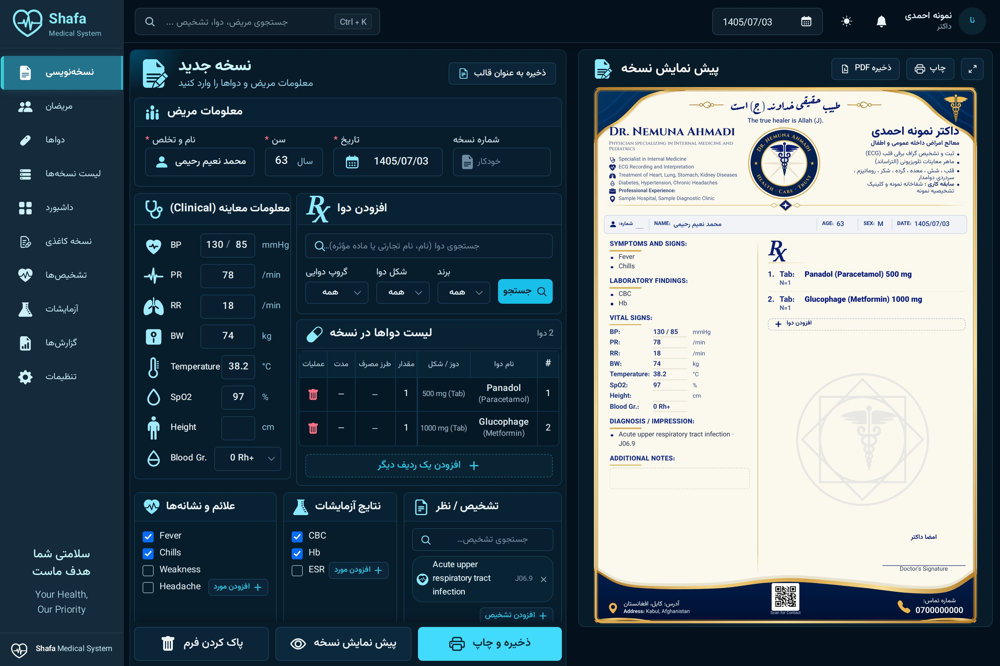
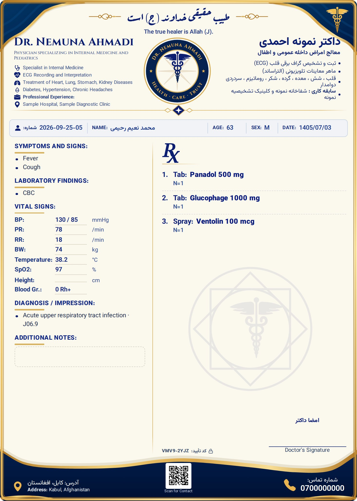
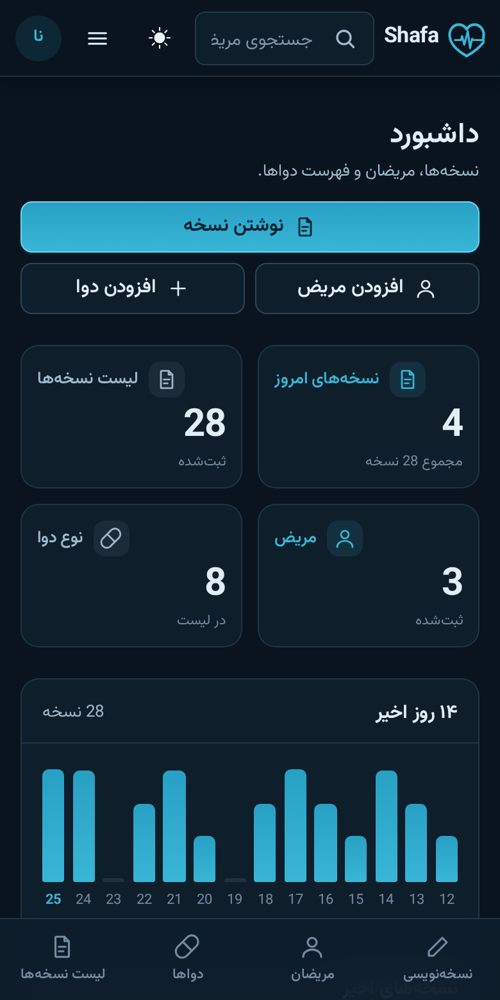

مریض را انتخاب کنید، دواها را اضافه کنید و نسخه را چاپ کنید یا بفرستید. معلومات مریضان از دستگاه بیرون نمیرود و برنامه بدون انترنت هم کار میکند.
تیلفون، کمپیوتر و تبلت — از همین صفحه نصب میشود. به فروشگاه ضرورت نیست.

همه چیز در حافظهی خود دستگاه ذخیره میشود. بدون حساب، معلومات مریض به هیچ سروری نمیرود؛ با حساب اختیاری تنها یک کاپی رمزشده.
یک بار که نصب شد، بعد از آن بدون انترنت هم باز میشود. در کلینیک انترنت قطع شود، کار متوقف نمیشود.
همهی معلومات در یک فایل ذخیره میشود؛ هر وقت خواستید در دستگاه دیگر برمیگردد.
نه بیشتر. برنامه دفتر گدام نیست؛ کارش نوشتن نسخه است.
مریض را انتخاب کنید، دوا را جستجو کنید، تعداد و طریقه استعمال را بنویسید. شماره نسخه خودکار داده میشود.
اگر مریض به دوایی حساسیت داشته باشد، همان لحظهی اضافه کردن هشدار میدهد. اگر یک ماده در دو سطر تکرار شود هم میگوید.
نام، تخصص، خدمات، آدرس و شمارههای خود را یک بار مینویسید؛ از آن به بعد روی هر کاغذ چاپ میشود. سه طرح دارد.
همان سربرگ را خالی چاپ کنید و مثل گذشته با قلم پر کنید. جاهای خالی خطدار چاپ میشوند.
واتساپ، ایمیل یا کاپی کردن متن. کود QR هم روی کاغذ چاپ میشود.
هر نسخه یک کد هشتحرفی دارد. اگر روی کاغذ دست برده شود، کد دیگر نمیخواند.
نه ثبت نام میخواهد، نه ایمیل، نه شماره تیلفون. در پنج دقیقه آماده است.
از بخش دانلود همین صفحه، دکمهٔ دستگاه خود را بزنید. برنامه در صفحهٔ اصلی یک آیکن میگذارد؛ از فروشگاه چیزی دانلود نمیشود.
در تنظیمات، نام و تخصص و آدرس و شمارههای خود را یک بار وارد کنید. از آن به بعد روی هر کاغذ چاپ میشود.
مریض را انتخاب یا ثبت کنید، دواها را اضافه کنید و چاپ را بزنید. برنامه از قبل فهرست دوا، تشخیص، علایم و لابراتوار دارد.
هر چند وقت یک بار از تنظیمات «دانلود پشتیبان» را بزنید و فایل را در جای امن نگه دارید. همین فایل، برنامه را به دستگاه دیگر هم میبرد.
سربرگ از معلومات خود شما ساخته میشود. هیچ نامی در برنامه ثابت نیست.

هر نسخه هنگام ذخیره شدن یک کد میگیرد؛ این کد از خلاصهی خود نسخه و یک کلید محرمانه که فقط در دستگاه شماست ساخته میشود. اگر دواخانه شک کند، متن نسخه را برای شما میفرستد و شما در چند ثانیه آن را بررسی میکنید.
| اگر کسی… | چه میشود |
|---|---|
| تعداد، دوز یا نام دوا را روی کاغذ تغییر دهد | گرفته میشود — خلاصه عوض میشود، کد نمیخواند |
| از صفر یک نسخهی جعلی بسازد | گرفته میشود — بدون کلید محرمانه کد معتبر ساخته نمیشود |
| از یک نسخهی درست فوتوکاپی بگیرد | گرفته نمیشود — کد هم کاپی میشود |
این جدول را عمداً همینطور نوشتهایم: آنچه را که نمیگیرد هم میگوییم.
هر چه در این صفحه میبینید، همین حالا و بدون پرداخت در دسترس است.
بدون ثبت نام، بدون محدودیت تعداد مریض یا نسخه.
نسخهٔ دوم برنامه در حال ساخته شدن است و پولی خواهد بود. قیمت آن هنوز تعیین نشده و تا وقتی که تعیین نشود، چیزی در این جا نمینویسیم.

همان برنامه روی گوشی هم کامل کار میکند — نه نسخهٔ کوچکشده، نه امکانات کمتر. بعد از نصب، مثل هر اپلیکیشن دیگر از صفحهٔ اصلی باز میشود.
دستگاه خود را انتخاب کنید. شفا یک برنامهٔ تحت وب است: به جای فایل نصبی، از خود مرورگر نصب میشود — بعد از نصب مثل هر برنامهٔ دیگر یک آیکن دارد، پُر صفحه باز میشود و بدون انترنت هم کار میکند.
گوشی و تبلت اندرویدی. با Chrome یا مرورگر خود گوشی.
بدون فایل APK · حدود ۱ میگابایت · Chrome یا مرورگر خود گوشی
اپل نصب برنامه را تنها از راه Safari اجازه میدهد؛ راه دیگری ندارد.
بدون App Store · تنها از راه Safari
با Chrome یا Edge. بعد از نصب در فهرست Start میآید و مثل برنامههای دیگر باز میشود.
بدون فایل EXE · Chrome یا Edge
با Chrome یا Edge روی هر دو کار میکند. در Safari مک، از منوی File گزینهٔ «Add to Dock».
macOS و لینوکس · Chrome، Edge یا Safari
بعد از نصب، نو شدنها خود به خود میآیند — چیزی را دوباره نصب کردن لازم نیست.
نمیخواهید نصب کنید؟ در مرورگر باز کنید — همه چیز همانطور کار میکند.
دیتابیس آفلاین. معلومات در حافظهٔ خود دستگاه است؛ بدون حساب، روی سرور کسی نمیرود.
حساب لازم نیست. ثبت نام، ایمیل و شمارهٔ تیلفون نمیخواهد. حساب تنها برای یکی کردن کمپیوتر و تیلفون است و اختیاری.
پشتیبان امن. یک فایل که خودتان نگه میدارید — بدون حساب، بدون انترنت، بدون حد.
بدون حساب، نخیر. هر نام، هر نسخه و هر عکسی که وارد میکنید در حافظهٔ خود دستگاه ذخیره میشود و از آن بیرون نمیرود.
در تنظیمات یک حساب اختیاری هم هست تا کمپیوتر و تیلفون ثبتهای یکسان داشته باشند. با حساب هم ثبتها در دستگاه میمانند و تنها یک کاپی روی سرور اپلیکیشن نگه داشته میشود که پیش از رفتن، در همین دستگاه رمز میشود؛ سرور را صاحب اپلیکیشن روی Cloudflare اداره میکند. اگر رمز شما قوی باشد، هیچ کس، حتی صاحب سرور، آن را باز کرده نمیتواند. سرور تنها نام کاربری، وقتها، اندازهٔ کاپی و آدرس IP را میبیند. اگر هم رمز و هم کد بازیابی گم شود، کاپی آنلاین باز نمیشود — برای همین پشتیبان اصلی همچنان فایل پشتیبان است.
بله. بعد از نصب، برنامه تماماً روی دستگاه است. در کلینیک انترنت قطع شود، نوشتن و چاپ نسخه متوقف نمیشود.
انترنت تنها برای نو شدن برنامه لازم است.
چون معلومات روی دستگاه است، با رفتن دستگاه معلومات هم میرود. برای همین پشتیبان گرفتن جدی است: از تنظیمات، «پشتیبان» یک فایل میدهد که باید جای امنی نگه دارید.
فایل پشتیبان را در دستگاه نو با «بازگردانی از پشتیبان» میدهید و همه چیز برمیگردد. به همین سبب میگوییم: منظم پشتیبان بگیرید.
با فایل پشتیبان: در دستگاه اول از تنظیمات «دانلود پشتیبان» را بزنید، فایل را به دستگاه دوم ببرید و آنجا «بازگردانی از پشتیبان» را بزنید. حساب و انترنت نمیخواهد.
هر بار که فایل نو را ببرید، ثبتهای نو هم میروند؛ چیزی از بین نمیرود چون بازگردانی ثبتها را یکجا میکند، پاک نمیکند.
چون ضرورت نیست. شفا یک برنامهٔ تحت وب است و از همین صفحه نصب میشود؛ بعد از نصب فرقی با یک برنامهٔ فروشگاهی ندارد: آیکن دارد، پُر صفحه باز میشود و بدون انترنت کار میکند.
این راه یک فایده هم دارد: نو شدنها خود به خود میآیند و لازم نیست هر بار چیزی دانلود کنید.
نخیر. هر چه امروز در این صفحه میبینید رایگان است و رایگان میماند.
نسخهٔ دوم برنامه که در حال ساخته شدن است پولی خواهد بود، اما آنچه امروز دارید از شما پس گرفته نمیشود.
برنامه را باز کنید و از تنظیمات «معلومات نمونه» را بار کنید؛ با چند دوا و مریض نمونه میتوانید یک نسخه بنویسید و چاپ آن را ببینید. با یک کلیک هم پاک میشود.